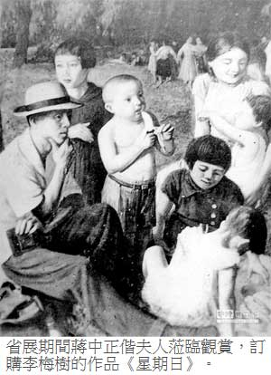

變色年代的畫家們（之六）
蔣介石現身會場
謝里法｜旺報／兩岸史話∣2013年9月9日
領頭一位穿軍服中年人，就是今天的貴賓蔣主席，他的照片從日本時代就經常出現在報紙上，更常看到的是被畫成丑角在日軍追趕下往深山裡跑的漫畫，沒想到今天能以勝利者姿態站在台灣人面前。
為了慶祝10月25日台灣光復一周年，第一屆省展選在22日提早3天開展，而揭幕典禮與光復節的慶祝大典一起於25日當天在中山堂的表演廳舉行，國民黨省黨部幾天前就全力發動台北各機關派代表參加，因此會場上人潮擁擠，當蔡繼琨到達時，負責接待的職員將他請到貴賓席的最後一排才勉強找到空位，美術界總比別人晚到，已經主席上台才見李梅樹、李石樵等一起入場，以後陸續到達的正好坐成一排。
省展只是配角
「從來沒有過這麼盛大的揭幕典禮！」李石樵一坐下，就為眼前的場面發出讚嘆。
「應該說這是光復周年的慶祝典禮，你沒看到那紅布條寫的，省展的開幕只有下面一行小字。」李梅樹提醒他，用手指著舞台上方的紅布。
這時李石樵注意到台上背後的牆，掛有蔣介石像，便問蔡繼琨：
「在中國人眼中蔣介石和孫文哪一個大？」
「孫文在的時候當然是孫文大，孫文死了就是蔣介石最大，但是在這場合中，台上掛蔣主席像而不掛孫總理像是不對的，當中必有文章……」雖然還想說什麼，又突然打住。
已已經有人站在台上講話，帶著很濃的浙江口音，李石樵、李梅樹等人幾乎完全聽不懂。然而未等台上的大官說完話，3個人走出側門，掏出香菸吞雲吐霧起來。
當天民間盛傳國民黨蔣主席已飛來台灣，果然次日一早省展評審團接到通知，下午4點在中山堂集合恭迎蔣主席，對台灣美術界這是件大事，日本統治時代人們心目中占有最高地位的是天皇，改朝換代後取代這地位的自然就是蔣介石，家家戶戶已將天皇的照片從牆上取下，換了蔣主席玉照，因此蔣主席無異就是現今的天皇。
郭雪湖和楊三郎兩人因受聘為長官公署諮議，也算是公職人員，所以一早就來到會場。
「把菸捺掉，此刻誰都不許吸菸，老先生最不喜歡就是聞到菸味。」這時進來了4、5個人，聲音來自領頭的50來歲穿黑色中山裝的中年胖子，當看到郭雪湖等兩人屬另類模樣，便問旁邊隨從：「那是幹什麼的，長官公署那邊來的？」
「報告長官，兩位是畫家，省展評審委員。」
未等說完，那胖子露出笑臉迎向郭、楊兩人，遠遠伸出手來，他的手好柔軟，握在手裡，有如握到一塊豬肉。
「兩位大師，我是省黨部主任，真是幸會，沒想到台灣畫家能畫出這麼好的作品，張張都精彩，兩位辛苦……。」話未說完人已經朝另外方向走去。
中山堂時門外已經來了許多人，全都被擋在門口，幾名穿中山裝的青年，臉部毫無表情站在大門兩側。
領頭一位穿軍服中年人就是今天的貴賓蔣主席，他的照片從日本時代就經常出現在報上，更常看到的是被畫成丑角在日軍追趕下往深山裡跑的漫畫，沒想到今天能以勝利者姿態站在台灣人面前，雖然身材削瘦卻神采飛揚，令人聯想到戰爭中高呼口號的英姿，處在艱困的抗戰期間的他或許才是政治生命的最高峰；另一邊蔣宋美齡高貴氣質站在畫前幽雅的風姿十足是個藝術的鑑賞家，令人不解的是她的太陽眼鏡從進門之後就一直沒有取下，可能因不習慣於台灣的氣候，不顧尊貴身分在公共場合用小指頭不停地挖鼻孔，這都被隨後進來的台灣畫家們看在眼裡，成為往後的笑談。
最後大家才看出來在旁引路的兩人，其中之一正是畫家們熟悉的黃榮燦，他用心講解蔣夫人面前的畫作。另一人則拿著小本子，記錄蔣介石感到興趣多看幾眼的每一幅畫：前後寫下李梅樹的《星期日》，陳澄波的《製材工廠》，范天送的《七面鳥》，郭雪湖的《驟雨》。等蔣介石一出大門，就貼上「蔣主席訂」的紅色字條，日後畫家們收到的支票則是從台灣省行政長官公署會計處開出來的。
其實蔣介石到會場只停留不到20分鐘，他一走所有因他而來的中山裝部隊亦隨之撤出，這回他的出巡可以說相當低調，沒有擺出領袖人物的浩大陣容，甚至從哪個門進入會場，外面的人都未能察覺到，到了會場民眾也只隔離而沒有刻意布置禁區。
替蔣夫婦解說
蔣介石帶來的人潮退去，又換來另一批，這時場面開始囂嘩，民眾進進出出，下課的中學生背書包一群接著一群，和戰前的台展幾無兩樣。
蔡繼琨見到王白淵就拉到一旁，告訴他：
「本來已安排好由你替蔣介石夫婦作解說，臨時被省黨部的人換成黃榮燦，也不知道他能說出些什麼。」
「那個叫黃榮燦的到底什麼背景？」
「不太清楚。聽蒲添生說，有一天姓黃的跑到工作室來，看到正進行中的蔣介石像，只說了一句：這個壞東西，掉頭就走，看來像個有志氣的藝術家，沒想到成了那壞東西的導覽員！」（待續）